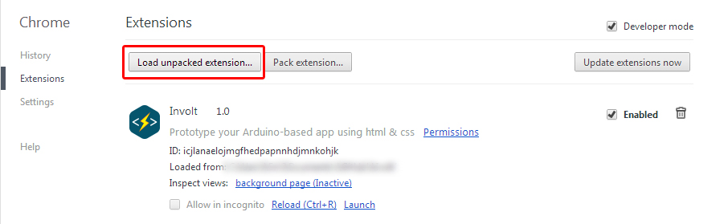
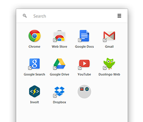
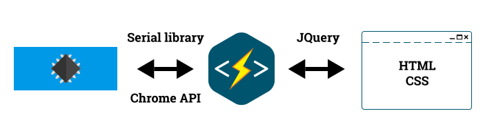

How to start with Involt?
- Install Google Chrome.
- Download and unpack Involt.
- In Chrome go to tools > extensions.
- Toggle Developer mode
- Click “Load unpacked extension...” and choose unpacked folder. 
Now you can open your project with launch button or Chrome App Launcher.
-
[function]
Describe what kind of object you want to create... check reference. You can add only one function per object.
-
[pin]
Analog or digital pin number. Type of pin define what kind of data you want to send. Currently you can define only one pin but you can distribute the data inside sketch.
P - PWM pin data (or any other number) - P5 , P6 ...
D - digital pin data (0/1) - D5 , D13 ...
A - analog pin (read) - A0 , A1 ...
-
[value]
Number you want to send or define basic parameters like maximum value.
*Some elements require two or more values to work.
-
[yourclass]
You can add your own class to element after the Involt specified classes.
Involt translate CSS classes into specified UI element, function and parameters. The .ard class defines Involt object.
...
void loop() {
chromeReceive();
chromeSend(0, analogRead(A0));
}...
<div class="ard show A0"></div>
...
void setup() {
Serial.begin(115200);
pinMode(5,OUTPUT);
}...
<div class="ard button P5 255">Click Me</div>
...
void setup() {
Serial.begin(115200);
pinMode(5,OUTPUT);
pinMode(6,OUTPUT);
}void loop() {
chromeReceive();
analogWrite(5, chromeDigital[5]);
analogWrite(6, chromeDigital[5]);
}
...
<div class="ard button P5 123">Click Me</div>
- Loader
On launch Involt uses loader to ask for Arduino port. To customize loader screen edit core/loader.css
How to remove loader:
- Open core/involt.js.
- Change "loaderOnLaunch" variable to false.
- Set "defaultSerialPort" to your connected Arduino port.
- User interface
To change Involt styleguide edit the core/framework.css or add your custom CSS file. Some classes may affect elements in loader. Do not use .ard class for objects that do not communicate with arduino.
- How to change window dimensions
Open core/background.js and change screenWidth or screenHeight. To run app on fullscreen uncomment the fullscreen parameter.
- Name and description of project
Open manifest.json. Do not change other elements inside manifest because your project will disappear from launcher. For details about manifest file go to Chrome Manifest website
- Direct/non-direct Mode
Direct mode send data from app to pins without storing them in chromeDigital array inside Arduino sketch. For more complex project with specified libraries and multiplexers you should set directMode to false and use chromeDigital array to distribute data. The advantage of direct mode is less code in sketch when testing or playing with framework for beginners (that's why it's set to default). You can also make everything in JavaScript.
You can't use both modes because direct mode automatically update pin values on fly and adding digital/analog write in loop will collide with this function.
In both modes you need to define pinMode for digital pins.
- Send the value to multiple pins at once
Before version 1.0.3 there was a limited support for sending value to multiple pins (or even multiple values to multiple pins). Currently this feature is removed due to many issues with buffer overload. To send same value to multiple pins you can use non-direct mode. For sending muliple values to multiple pins use JQuery.
- Send or receive more variables. Send or receive custom string.
There are simple tricks to do that. Check this tutorial.
- Hardware-specific libraries
Involt is designed to be as simple as it's possible. The functions inside sketch are using only serial library, framework shouldn't collide with additional libraries.
- Other types of communication
Involt is still in development and currently framework is serial-only. In future there will be also bluetooth communication included.
boolean directMode = false;
...
void setup() {
Serial.begin(115200);
pinMode(5,OUTPUT);
}void loop() {
chromeReceive();
analogWrite(5, chromeDigital[5]);
}...
JavaScript and Chrome support
CSS classes contain specified function and parameters that JavaScript converts to raw serial data (pin number, value). Involt automatically exchange data between Arduino and App using Serial library and Chrome API. Use these values as data array inside Arduino without writing additional lines of code.
- analogPins[k]
Array that store analog pins value where "k" is pin number (pin A0: k = 0).The data is updated automatically as long as you use chromeSend function in sketch.
- digitalPins[k]
Array that store digital/PWM pin value declared and changed inside Involt. "k" is pin number (D5 = 5, P5 = 5).
- arduinoSend(pin, value);
Use this function for sending data to arduino.
- JQuery object data
Involt parameters (css classes) are stored in JQuery object data. You can access them with .data() like this:
To create more advanced project you can write custom JQuery/JS script. For this purpose Involt store data inside arrays:
$(".yourbutton").click(function() {
$("div").css('font-size', analogPins[0]);
});void loop() {
chromeReceive();
int val = analogRead(A0);
int mapVal = map(val, 0, 1023, 1, 150);
chromeSend(0, mapVal);
}
$(".yourbutton").click(function() {
$(this).html(digitalPins[5]);
});$(".yourbutton").click(function() {
arduinoSend("P5", 123);
});$(this).data('2');
//Pin number only (1,2,3)
$(this).data('pinNumber');
- Read what you can do with Chrome API on apps reference:
- To understand how Involt uses Chrome API check:
- involtID
The connection ID is required for almost every operation in chrome.serial. The variable is defined after the connection is accepted.